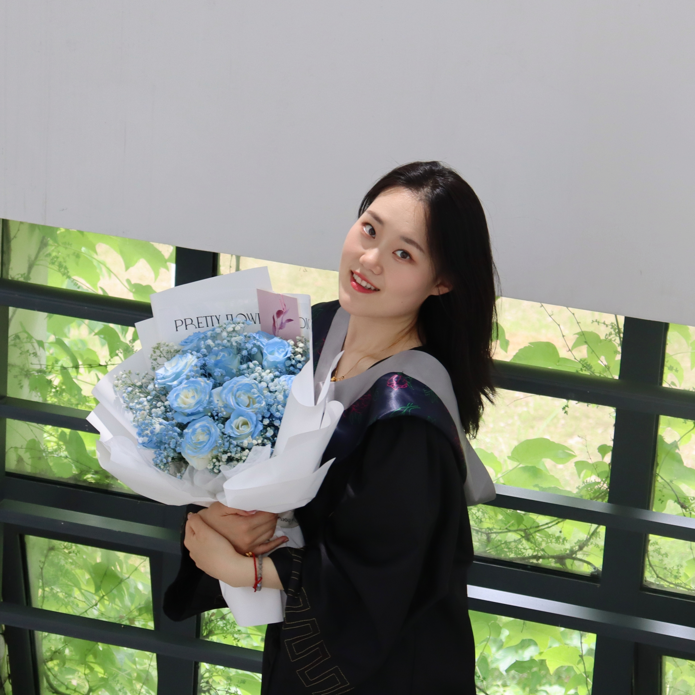

Tsinghua University
Advisor:
Yujiu Yang
GPA: 3.9/4.0 (Top 10%)
Research interests: reinforcement learning, efficiency, and theoretical foundations of large models
I am a master's student at IIGroup in Tsinghua University, supervised by Prof. Yujiu Yang. Previously, I received my Bachelor's degree in Mathematics from Fudan University's Talent Program.
My research interests include reinforcement learning, efficient inference, and the theoretical foundations of large models. I am particularly interested in the mathematical principles behind learning algorithms, and I find it especially exciting when an algorithm can be understood in a clear and interpretable way. I am currently a research intern at the Qwen-Omni Team, working on proactive-response learning. Previously, I interned at Microsoft Research Asia, where I worked on efficient multimodal retrieval and inference acceleration.
I expect to graduate in 2027 and plan to apply for PhD programs. Feel free to contact me if you are interested in my work or potential collaboration.

(* denotes equal contribution.)